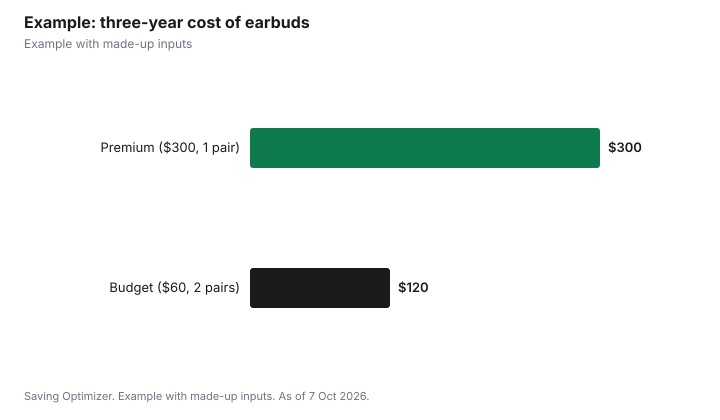

Technology · Canada
Headphones and Earbuds in Canada: When Premium Is Worth It and When Cheap Is Fine
Premium headphones or earbuds are worth it in Canada when you use them for hours every day and will actually use what the extra money buys: strong noise cancelling on a commute or flight, clear microphones for work calls, comfort for long wear, and longer battery life. For the gym, for kids, for occasional listening, or if you tend to lose earbuds, a well-reviewed budget pair is usually the smarter buy. Compare the cost per year of use rather than the price tag, since earbud batteries wear out and often cannot be replaced. Whatever you buy, Health Canada says headphones are too loud if your device volume is above 60% of the maximum.
Key takeaways
- Premium pays off for daily, long listening and for calls, commutes and flights.
- Budget pairs suit the gym, kids, occasional use and people who lose earbuds.
- Judge cost per year of use; earbud batteries wear out.
- Health Canada: above 60% of maximum volume is too loud.
- Buy where you can return them if the fit is wrong.
- Example with made-up inputs: premium vs budget over three years.
What the extra money usually buys
| Feature | Budget | Premium |
|---|---|---|
| Active noise cancelling | None or basic | Stronger, with adjustable modes |
| Microphones for calls | Basic | More microphones and better noise reduction |
| Comfort for long wear | Varies | More padding, sizes and better fit options |
| Battery life | Shorter | Often longer, with faster charging |
| Multi-device switching and app features | Limited | More features, often tied to one phone brand |
| Sound tuning | Fixed | Adjustable in an app |
| Repair and battery service | Rare | Sometimes offered, at a cost |
Sound quality improves with price up to a point, but many people cannot hear a difference between mid-range and premium pairs in everyday use, especially on a bus or with streaming audio. Fit matters more than most specs: earbuds that do not seal well in your ears will sound thin and let in noise, whatever they cost.
When premium is worth it
- Long daily commutes or frequent flights: good noise cancelling makes noisy places bearable and can make it easier to keep the volume lower.
- Work calls: better microphones make you easier to hear, which matters if you are on calls for hours.
- Long listening sessions: comfort becomes the main feature after the first hour.
- You keep things for years: if you look after your gear, the higher price spreads over more years.
- You use one phone brand: earbuds from the same ecosystem can switch devices and pair more smoothly.
When cheap is fine
- The gym and running: sweat, drops and loss are likely. Look for a water and sweat resistance rating rather than premium sound.
- Kids: lost and broken earbuds are common; choose volume-limiting headphones for children (see below).
- Occasional use: a pair used for an hour a week rarely justifies a premium price.
- A backup pair: a cheap wired pair in a bag or desk drawer saves buying in a hurry.
- You lose earbuds: be honest about it. Replacement single earbuds for premium models can cost a lot.
Earbuds, over-ear or wired?
The type of headphone often matters more than the price tier. Earbuds are small and easy to carry, but they are the easiest to lose and their batteries are the smallest. Over-ear headphones are bulkier, but they are usually more comfortable for long sessions, often block more noise and tend to have bigger batteries. On-ear models sit in between and can press on the ears over time. Wired headphones, plugged into a laptop, a desk setup or a phone through an adapter, have no battery to wear out and can give very good sound for the money, which makes them a strong choice for a home office.
- Home office: wired or over-ear, with a good microphone if you take calls.
- Commute and travel: noise-cancelling over-ear or earbuds, depending on how much you carry.
- Gym: secure-fit earbuds with a sweat resistance rating.
- Sleep or relaxation: soft, low-profile earbuds; avoid falling asleep with high volume.
Battery wear: the hidden cost of wireless earbuds
Wireless earbuds run on small rechargeable batteries that lose capacity with use, like a phone battery. Because the batteries are tiny and often sealed in, many earbuds cannot have them replaced at a reasonable cost, so their useful life may be set by the battery rather than the sound. Over-ear headphones usually have bigger batteries and can last longer, and wired headphones have no battery at all. When comparing prices, ask how many years you expect to use them, and whether the maker offers a battery service or replacement program.
Protect your hearing
Health Canada says your headphones are too loud if your device volume is above 60% of the maximum, or if you get a warning from a device or app that checks the volume. It suggests turning the volume down, using a built-in feature that limits maximum volume, turning on volume warnings, and taking breaks or switching between headphones and speakers. For children, Health Canada suggests sound-limiting headphones or settings that keep sound below 75 dBA, the limit the World Health Organization recommends for children. Many phones have hearing or headphone safety settings that do this automatically.
Buying smart: timing, returns and warranties
- Headphones are a common Black Friday and Boxing Day item; record prices now and compare with the price history.
- Older models often drop in price when a new one launches and are still good value.
- Buy where you can return them if the fit is wrong. Some stores treat opened headphones and earbuds differently for hygiene reasons, so read the return policy first; see where to buy electronics.
- Keep the receipt for the manufacturer's warranty, and register the product if the maker asks.
- Skip extended protection plans on cheap earbuds; see protection plans for how to judge them.
- Refurbished headphones from the maker or a reputable seller can be good value; see refurbished electronics.
Gifts: what to ask before buying
Headphones are a popular gift, but fit and ecosystem make them personal. Before buying for someone else, find out what phone they use, whether they prefer earbuds or over-ear, and where they will use them, such as a commute, the gym or an office. Include a gift receipt, and check the store's holiday return window so the recipient can exchange them if they do not fit.
Example with made-up inputs
These numbers are an example with made-up inputs, not store prices. A commuter compares a $300 pair of premium noise-cancelling earbuds with $60 budget earbuds. The commuter expects the premium pair to last three years and the budget pairs about 18 months each, so two budget pairs over the same three years. Premium: $300, or $100 a year. Budget: $120, or $40 a year. At two hours a day, about 500 hours a year, the premium pair costs about 20 cents an hour and the budget pairs about 8 cents. The question is whether quieter commutes and clearer calls are worth about $60 a year. For a daily commuter with many calls, they may be; for someone listening an hour a week, they are not.
| Premium | Budget | |
|---|---|---|
| Price per pair | $300 | $60 |
| Pairs over three years | 1 | 2 |
| Three-year cost | $300 | $120 |
| Cost per year | $100 | $40 |
| Cost per hour (500 hours a year) | About 20 cents | About 8 cents |

Recycling old headphones
Do not put old earbuds or headphones in the garbage, because they contain batteries. Most provinces run electronics recycling programs with drop-off locations, and many electronics stores accept small electronics. Search your province's electronics recycling program for the nearest drop-off.
Common mistakes
- Paying for noise cancelling you will never turn on.
- Buying premium earbuds for the gym and losing one in the first month.
- Ignoring fit and comfort in favour of specs.
- Listening above 60% of maximum volume for long periods.
- Missing the return window after a holiday purchase.
Sources
- Health Canada, Noise and sound: Protect your hearing health (60% of maximum volume; volume limits and warnings; 75 dBA for children per WHO), canada.ca, page dated 6 Jan 2026, as of 7 Oct 2026.
- Headphone prices, lifespans and hours of use in the worked example are made-up inputs.
Frequently asked questions
Are expensive headphones worth it?
They are worth it if you listen for hours every day and use features such as noise cancelling, better call microphones and long battery life. For occasional use, the gym or kids, a budget pair is usually enough.
How loud is too loud for headphones?
Health Canada says headphones are too loud if your device volume is above 60% of maximum, or if a device or app warns you about the volume.
What volume limit is safe for kids' headphones?
Health Canada suggests sound-limiting headphones or settings that keep sound below 75 dBA, the limit the World Health Organization recommends for children.
How long do wireless earbuds last?
It depends on use, but their small batteries lose capacity over time and are often not replaceable, so battery life usually sets how long they stay useful.
Should I buy headphones on Black Friday?
Headphones are a common Black Friday and Boxing Day item. Track the price before the sale and buy if it is at or below the lowest recent price.
Can I return opened earbuds?
It depends on the store. Some treat opened headphones and earbuds differently for hygiene reasons, so read the return policy before you buy.
Researched and drafted with AI assistance and fact-checked against official Canadian sources. How we create content.
Disclosure: No headphone brand or retailer is recommended or ranked. There are no affiliate links on this page and no partnership is claimed. Education only, not medical advice.